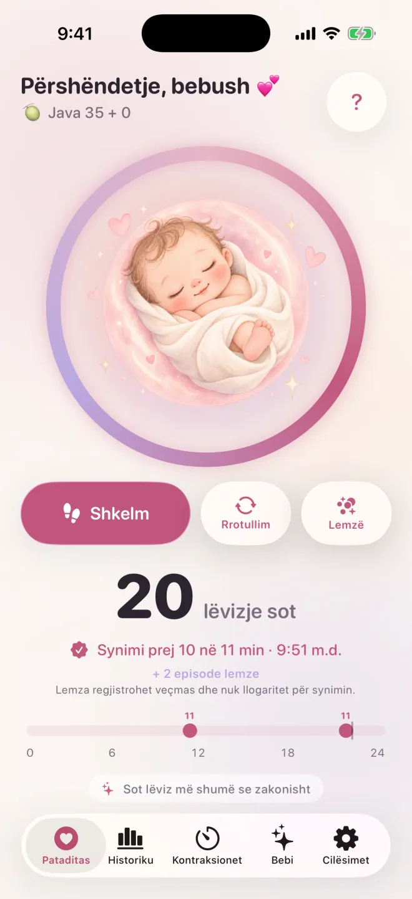

Pataditas / Numërimi i shkelmave të bebit
Numërimi i shkelmave të bebit: kur të nisësh, çfarë është normale, kur të telefonosh
Prindërit pyesin shpesh sa shkelma janë normale, kur të nisin numërimin dhe kur t’i telefonojnë dikujt. Kjo faqe përmbledh çfarë thonë NHS, Count the Kicks dhe RCOG për lëvizjet fetale dhe tregon ku ndryshojnë. Është informacion i përgjithshëm, jo këshillë mjekësore.
Përgjigje e shpejtë
- Nuk ka një numër të vetëm normal lëvizjesh. Ajo që ka rëndësi është ritmi i zakonshëm i bebit tënd (NHS, RCOG).
- Udhëzimet për numërimin ndryshojnë: Count the Kicks sugjeron të matësh 10 lëvizje nga java e 28-të, ndërsa NHS thotë se numërimi nuk është i detyrueshëm.
- Nëse lëvizjet pakësohen, ndalojnë ose ndryshojnë, kontakto menjëherë maminë, mjekun ose repartin e maternitetit, ditën apo natën. Mos prit deri në ditën tjetër.
Sa shkelma të bebit (lëvizje fetale) janë normale?
Nuk ka një numër të vetëm normal shkelmash. NHS thotë se nuk ka një numër të caktuar lëvizjesh që duhet të ndiesh çdo ditë, dhe fletushka për pacientët e RCOG thotë të njëjtën gjë: ajo që ka rëndësi është ritmi i zakonshëm i bebit tënd dhe nëse ai pakësohet apo ndryshon.
Fletushka e RCOG shton se bebat kanë periudha gjumi, kryesisht 20 deri në 40 minuta dhe rrallë më shumë se 90 minuta, kur zakonisht nuk lëvizin, dhe se pasdite e në mbrëmje janë zakonisht kohët më të ngarkuara. Ajo thotë se numri i lëvizjeve priret të rritet deri në javën e 32-të e pastaj mbetet afërsisht i njëjtë, dhe se duhet të vazhdosh ta ndiesh bebin duke lëvizur deri në lindje. Ka më pak gjasa t’i vëresh lëvizjet kur je e zënë ose aktive, dhe nëse placenta ndodhet në pjesën e përparme të mitrës, ato mund të jenë më të vështira për t’u ndier.
Kur fillojnë bebat të shkelmojnë dhe kur duhet të nis numërimin?
Shumica i ndjejnë lëvizjet për herë të parë diku midis javës 16 dhe 24, sipas NHS; në shtatzëninë e parë mund të jetë pas javës së 20-të. Count the Kicks sugjeron të nisësh numërimin ditor në javën e 28-të, ose në javën e 26-të nëse ke rrezik më të lartë ose pret më shumë se një bebe. NHS thotë se numërimi nuk është i detyrueshëm.
Nëse nuk e ke ndier bebin duke lëvizur deri në javën e 24-të, NHS thotë t’i thuash mamisë, e cila do të kontrollojë rrahjet e zemrës dhe lëvizjet e bebit. Mamia ose mjeku yt mund të rekomandojë një kohë ose metodë tjetër për ty, ndaj pyet në vizitën tjetër.
Si numërohen shkelmat e bebit?
Count the Kicks sugjeron të zgjedhësh një kohë kur bebi zakonisht është aktiv, të ulesh me këmbët lart ose të shtrihesh anash dhe të shënosh çdo lëvizje deri sa të arrish në 10, duke matur sa kohë duhet. Bëje afërsisht në të njëjtën orë çdo ditë. Shkelmat, shtytjet, prekjet, rrotullimet dhe valëzimet llogariten të gjitha.
Count the Kicks thotë t’i telefonosh menjëherë ofruesit tënd të kujdesit nëse vëren një ndryshim në forcën e lëvizjeve të bebit ose në kohën që duhet për të arritur 10. Pataditas nuk përdor kronometër: prek një herë për çdo lëvizje dhe aplikacioni i grupon prekjet, duke shënuar kur regjistrohen 10 lëvizje brenda dy orëve. Ky grupim dyorësh është funksion i vetë aplikacionit, jo prag mjekësor.
A pajtohen NHS dhe Count the Kicks për numërimin?
Jo plotësisht. Count the Kicks (SHBA) sugjeron të matësh sa kohë duhet për të ndier 10 lëvizje, nga java e 28-të (java e 26-të nëse ke rrezik më të lartë ose pret më shumë se një bebe). NHS (Mbretëria e Bashkuar) thotë se nuk ka një numër të caktuar dhe se nuk ke nevojë të numërosh, por duhet të njohësh ritmin e zakonshëm të bebit.
Fletushka e RCOG thotë gjithashtu se nuk ka mjaft prova për të rekomanduar përdorimin rutinë të një grafiku lëvizjesh dhe se njohja e ritmit individual të bebit tënd është më e rëndësishme. Të dyja qasjet pajtohen në pikën kryesore: nëse bebi lëviz më pak se zakonisht, ndalon së lëvizuri ose ritmi ndryshon, kontakto menjëherë maminë, mjekun ose repartin e maternitetit. NHS shton se duhet të telefonosh edhe në mes të natës dhe të mos presësh deri në ditën tjetër. Pataditas regjistron vetëm atë që ndien ti; pyet ekipin mjekësor që të ndjek se cilën qasje rekomandon.
A llogariten lemzat si shkelma?
Jo. Count the Kicks nuk i numëron lemzat, sepse i përshkruan si të pavullnetshme. Në Pataditas mund t’i regjistrosh lemzat si lloj më vete, ndaj ato mbeten në historikun tënd, por nuk llogariten te 10 lëvizjet. Nëse ke dyshim nëse ndjeve lemzë apo lëvizje, pyet maminë ose mjekun.
Count the Kicks i rendit shkelmat, shtytjet, prekjet, rrotullimet dhe valëzimet si lëvizjet që duhen numëruar. Fletushka e RCOG thotë se njerëzit i ndjejnë lëvizjet e bebit si shkelm, dridhje, valëzim ose rrotullim.
Çfarë të bëj nëse bebi lëviz më pak se zakonisht?
Kontakto menjëherë maminë, mjekun ose repartin e maternitetit, ditën apo natën. NHS thotë të mos presësh deri në ditën tjetër, edhe në mes të natës, dhe të mos përdorësh një pajisje shtëpiake për dëgjimin e rrahjeve të zemrës për të kontrolluar bebin. Mos u mbështet te një aplikacion apo te një synim numërimi për të vendosur nëse do të telefonosh.
Fletushka e RCOG thotë të kërkosh ndihmë profesionale menjëherë, të mos shkosh kurrë të flesh duke injoruar një pakësim ose ndryshim të lëvizjeve dhe të kontaktosh sërish maminë ose repartin e maternitetit nëse ndodh përsëri, pavarësisht sa herë. Count the Kicks thotë të shkosh në spitalin më të afërt nëse nuk arrin ta kontaktosh ofruesin tënd të kujdesit. Kjo vlen nëse ke numëruar apo jo, dhe çfarëdo që tregon çdo aplikacion.
Si përshtatet Pataditas këtu dhe a funksionon në Apple Watch?
Pataditas është një aplikacion për iPhone dhe Apple Watch që regjistron lëvizjet që ndien: prek një herë për çdo shkelm, rrotullim ose lemzë dhe ai ruan orën dhe llojin. Nuk diagnostikon asgjë, nuk mund të tregojë nëse bebi është mirë dhe nuk zëvendëson këshillën e mamisë ose të mjekut tënd.
Në Apple Watch, aplikacioni shoqërues (watchOS 26 ose më i ri) të lejon të prekësh ekranin e orës sa herë që ndien një lëvizje; shto Pataditas te çifërblati ose te Smart Stack për qasje të shpejtë. Regjistrimet sinkronizohen me aplikacionin në iPhone përmes iCloud-it tënd privat, pa pasur nevojë të krijosh llogari. Numërimi është falas.

Të duhet udhëzimi hap pas hapi? Lexo Si të numërosh shkelmat e bebit me iPhone ose Apple Watch.
Autori, burimet dhe statusi i shqyrtimit
Shkruar nga Luis Angel Lucatero Villanueva, themelues i Kaelux, që ndërton Pataditas. Kjo faqe është informacion i përgjithshëm, jo këshillë mjekësore. Nuk është shqyrtuar nga një profesionist shëndetësor; pohimet mjekësore vijnë nga burimet e listuara më poshtë dhe janë kontrolluar së fundi më 21 tetor 2026. Ke vënë re një gabim? Na shkruaj te hola@rutmia.com.
- NHS: Your baby’s movements — faqja u rishikua së fundi më 8 korrik 2024; kontrolluar më 21 tetor 2026. Përdorur për: kur ndihen lëvizjet për herë të parë, mungesa e një numri të caktuar lëvizjesh, numërimi nuk është i detyrueshëm, telefono menjëherë edhe natën, pajisjet shtëpiake për rrahjet e zemrës dhe t’i thuash mamisë nëse nuk ke ndier lëvizje deri në javën e 24-të.
- Count the Kicks: Frequently asked questions — faqja nuk tregon datë; kontrolluar më 21 tetor 2026. Përdorur për: kur të nisësh numërimin (java e 28-të, ose java e 26-të nëse ke rrezik më të lartë ose pret më shumë se një bebe), metoda e 10 lëvizjeve, numërimi në të njëjtën orë çdo ditë, çfarë llogaritet si lëvizje, lemzat dhe telefonimi menjëherë.
- RCOG: Your baby’s movements in pregnancy (patient information leaflet) — botuar në shkurt 2019; RCOG thotë se i rishikon fletushkat çdo tre vjet, ndaj mund të ekzistojë një version më i ri; kontrolluar më 21 tetor 2026. Përdorur për: mungesa e një numri specifik lëvizjesh, mungesa e grafikut rutinë të lëvizjeve, ritmet tipike të aktivitetit dhe gjumit dhe kërkimi i ndihmës menjëherë.
Të gjitha burimet janë në anglisht.